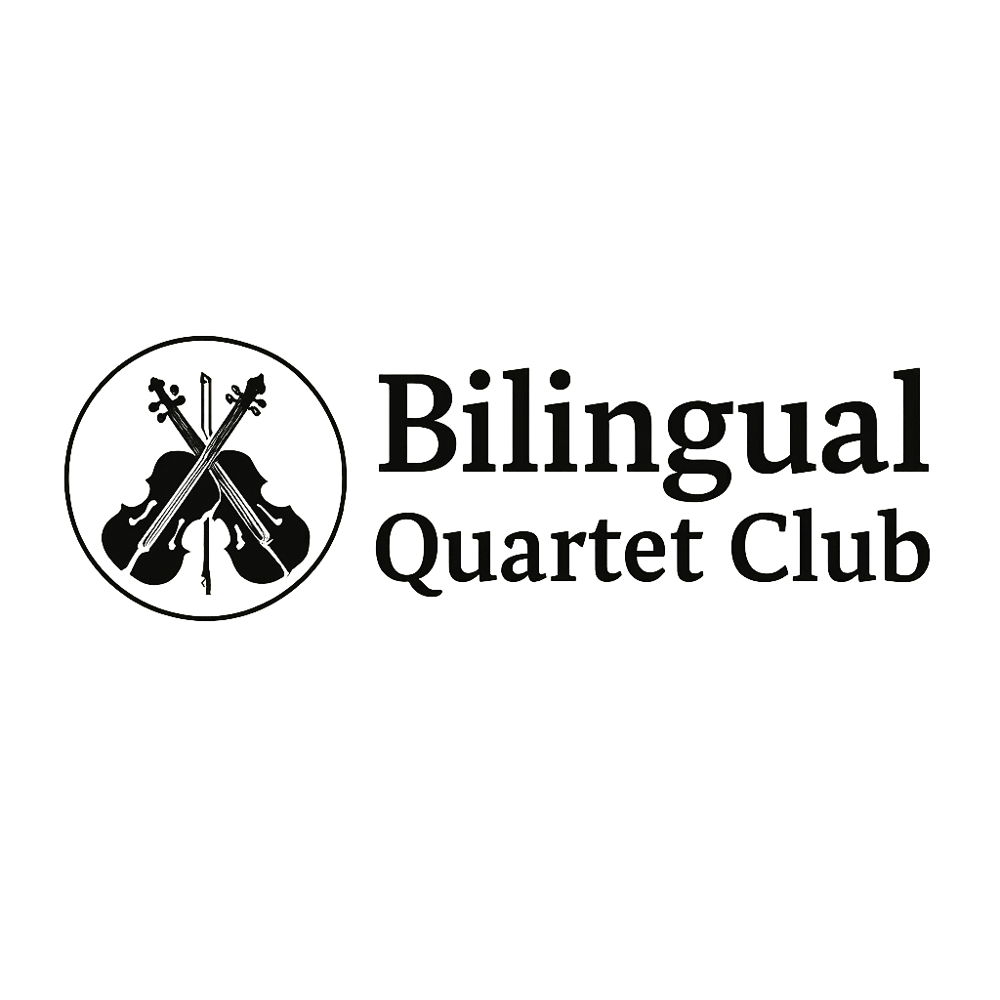

Small Ensemble • Big Musical Growth
体験参加はこちら四重奏に限らず、「誰かと一緒に音楽を奏でること」を大切にしています。
一人で黙々と練習するだけなんてもったいない！
みんなで音を重ねれば、音楽は100倍楽しい!
Music is better together.
四重奏に限らず、「誰かと一緒に音楽を奏でること」を何よりも大切にしています。
一人で黙々と練習するだけなんてもったいない。みんなで音を重ねることで、音楽は100倍楽しくなります。
アンサンブル活動を通して、
協調性・コミュニケーション力・相手の音を聴く力が自然と育まれます。
音楽を楽しみながら、人と関わる力を身につけられる環境を大切にしています。
このクラブは、小学5年生の娘が「イギリスで経験したカルテットを、日本でも続けたい」と話したことをきっかけに始まりました。
年齢差のある子ども同士でも、カノンやデュオなどを楽しむことができる経験から、年齢よりも「一緒に音楽を楽しみたい気持ち」を重視しています。
グループ分けは年齢・経験・性格を考慮し、無理のない形で行います。
Music is better together.
We value making music with others more than playing alone. Chamber music is not just about quartets — it’s about sharing sound and enjoying together.
Through ensemble playing, children naturally develop collaboration, communication, and listening skills while having fun.
This club started after my fifth-grade daughter expressed her wish to continue playing in a string quartet, an experience she enjoyed while living in the UK.
We have seen children of different ages enjoy Pachelbel’s Canon and duets together, which inspired us to value enthusiasm for playing music together and listening to others over age differences.
Groups are arranged thoughtfully considering age, experience, and personality to ensure a comfortable experience.
少人数で安心してアンサンブルができるクラブです。
対象楽器：ヴァイオリン・ヴィオラ・チェロ ほか
対象年齢：小学校高学年〜中学生中心（応相談）
参加条件：楽器経験のある方
A welcoming club for small group ensemble music.
Instruments: Violin, Viola, Cello, and other instruments
Age: Mainly upper elementary to middle school students (other ages welcome upon consultation)
Requirements: Prior instrument experience
Dates are currently being arranged.
🎧 What is TONIC? TONIC is a low-latency app for ensemble practice.
▶ TONIC official site
🏠 Both in-person and online sessions available
支払い方法： 当日現金、事前振込、または PayPay
🌱 初回は体験参加(無料）です
Payment: Cash, bank transfer, or PayPay
🌱 First-time participants join as a trial session
江東区・豊洲／有明エリア
※詳細はお申し込み後にご案内します
Koto-ku, Toyosu / Ariake area
* Detailed directions will be provided after registration.